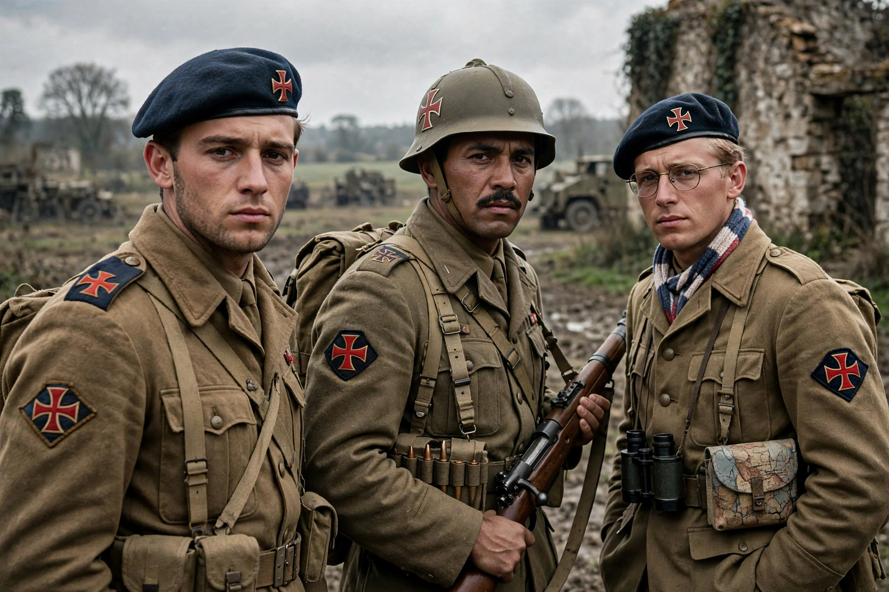

Free France

| Free France | |
| Founded | June–July 1940, London |
|---|---|
| Leader | Charles de Gaulle |
| Status | Government-in-exile / French resistance authority; recognised by the Allies progressively |
| Successor | French Committee of National Liberation (1943); Provisional Government (1944) |
| Symbol | Cross of Lorraine |
Free France (French: France libre) was the government-in-exile and resistance organisation led by Charles de Gaulle during the Second World War. Founded in London after the fall of France in June 1940, it fought alongside the Allies, rallied much of the French colonial empire, and in 1944 became the Provisional Government of the French Republic.
- The Appeal of 18 June
- Building Fighting France
- The empire and the war
- From Free France to government
The Appeal of 18 June
De Gaulle, a junior general and under-secretary for war in Paul Reynaud's government, flew to London on 17 June 1940 rather than accept the armistice sought by Pétain. On 18 June he broadcast on the BBC the Appel du 18 juin, declaring that France had lost a battle but not the war and calling on French soldiers, engineers and workers to join him. Few heard it at the time, but the appeal became the founding act of Free France. On 28 June Britain recognised de Gaulle as leader of the Free French; the movement adopted the Cross of Lorraine as its emblem.
Building Fighting France
The first Free French forces numbered only a few thousand — soldiers evacuated from Dunkirk or Norway who chose not to be repatriated, sailors, and volunteers from around the world. A failed Anglo–Free French attempt to rally Dakar in September 1940 was a setback, but colonies in equatorial Africa (Chad, Cameroon, Congo-Brazzaville) rallied to de Gaulle, giving Free France territory, troops and standing. In July 1942 the movement renamed itself France combattante ("Fighting France") to embrace the internal Resistance, with which de Gaulle's delegates, above all Jean Moulin, worked to assert his leadership.
The empire and the war
Free French troops distinguished themselves at Bir Hakeim in Libya (1942), where General Koenig's brigade held off Axis forces, and fought in Eritrea, Syria, Tunisia, Italy and, in 1944, in the liberation of France: Leclerc's 2nd Armoured Division landed in Normandy and liberated Paris and Strasbourg, while a French expeditionary corps fought in Italy and an army under de Lattre landed in Provence. The Brazzaville Manifesto of October 1940 had already asserted Free France's claim to embody republican legality against the Vichy regime.
From Free France to government
In June 1943, after the Allied liberation of North Africa, de Gaulle shared power with General Giraud in the French Committee of National Liberation at Algiers, soon emerging as its sole head; the committee absorbed the Free French structures. In June 1944 it proclaimed itself the Provisional Government of the French Republic, and after the liberation of Paris in August 1944 de Gaulle's government took power in the capital, ensuring that France was treated as a victor rather than a liberated enemy state.
See also: French Resistance; Charles de Gaulle; Philippe Pétain; Armistice of 22 June 1940.